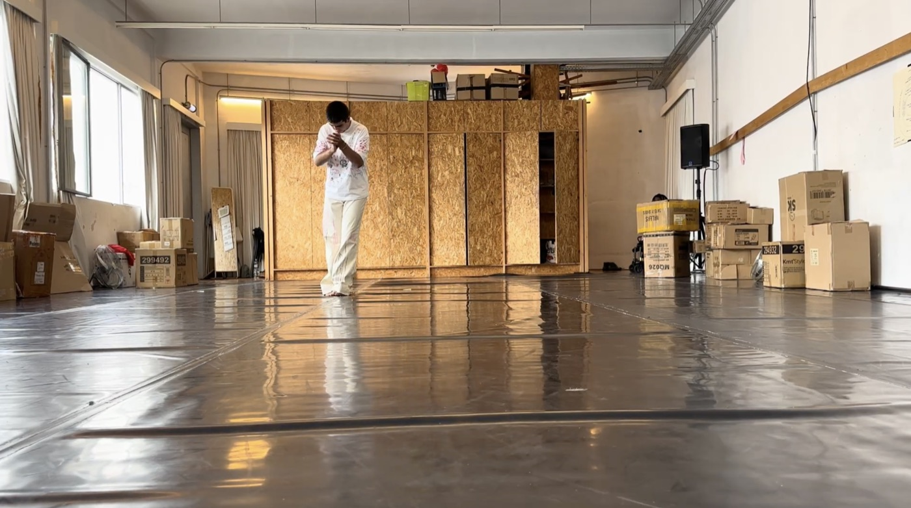
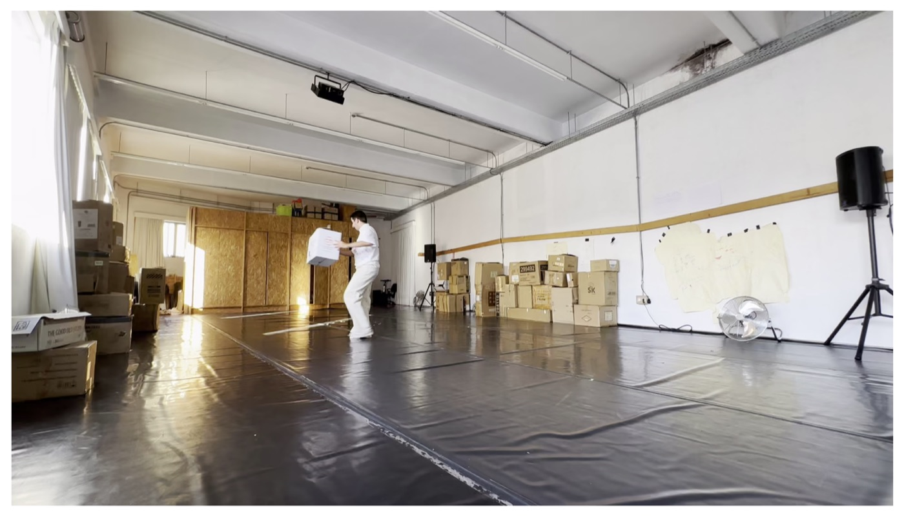
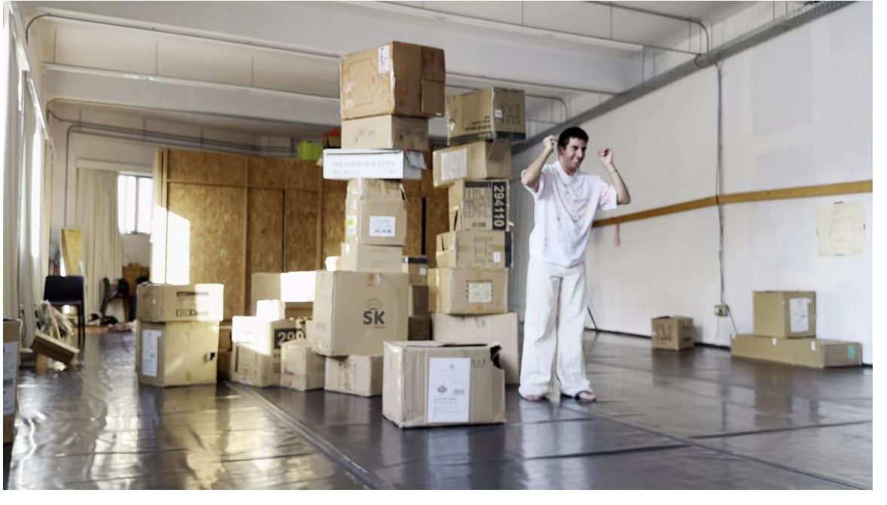
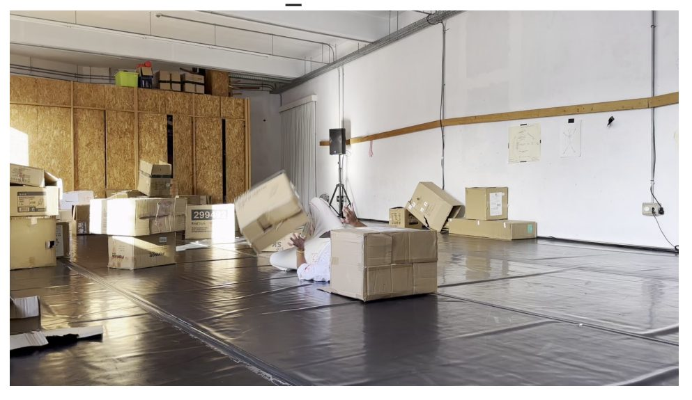
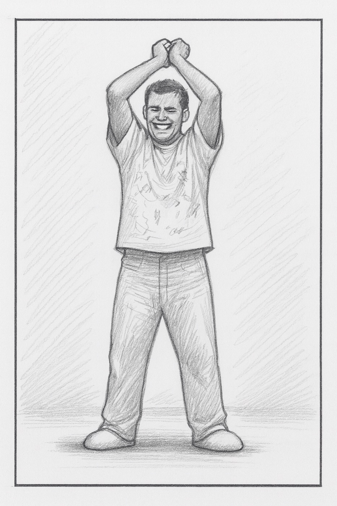
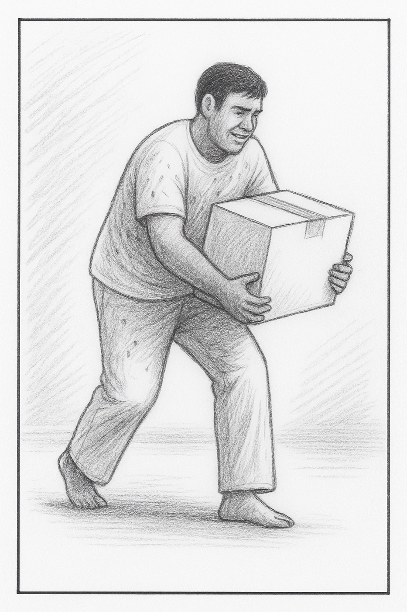
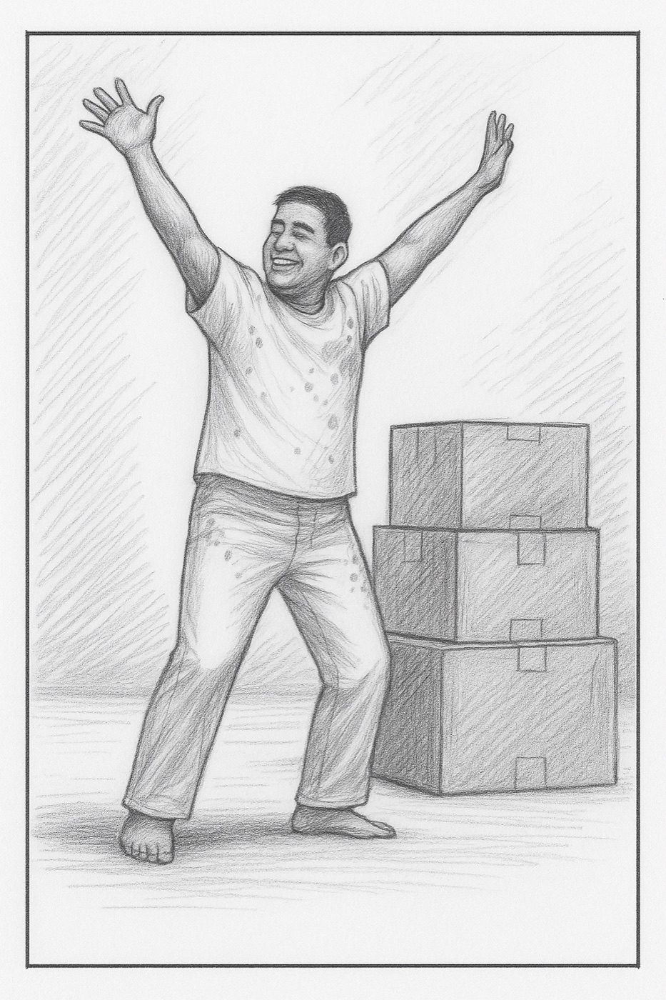
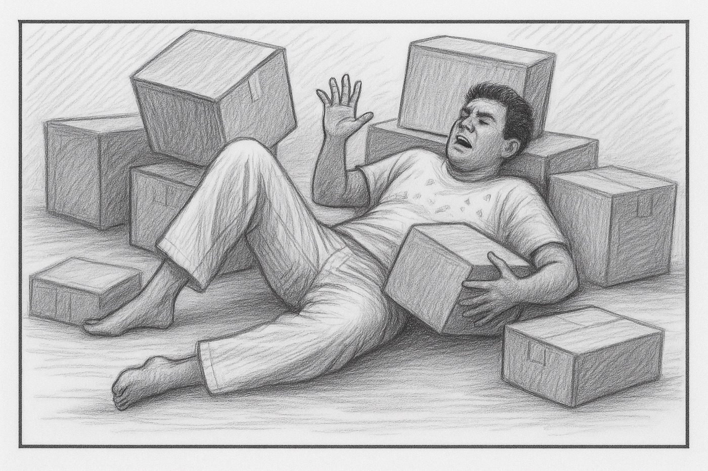
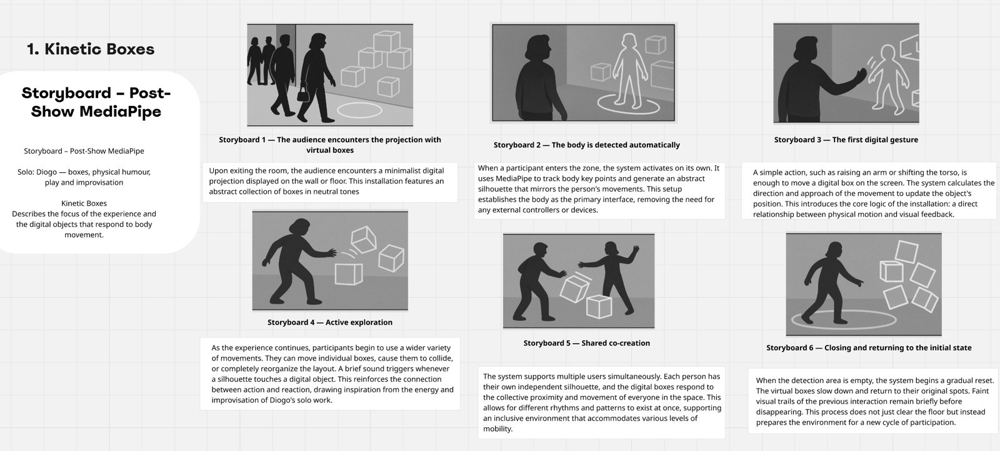

Weight, and the boxes.

Diogo narrates his own solo, first-person — the camera moves off the choreographer and onto the dancer.
His solo is built from weight, imbalance, and physical humour: cardboard boxes he drags, stacks, and dismantles across the stage, half-props and half-partners.
“In Diogo's solo, the focus lies on weight, imbalance, physical humour, repetition, and improvisation.”
Bernardo Nunes · thesis draft, “Design of Post-Performance Interactive Installations”In handFour stills from the studio, already captured — the boxes, the space, and the improvisation the solo is built from.



The four hand-drawn panels the solo was built from, already sketched.




The storyboard for the camera-based installation built from Diogo's solo, where the audience's own movement becomes the interaction.

“Projected digital boxes respond to bodily movement by shifting, colliding, reorganising, or dispersing… emphasising qualities such as weight, resistance, and imbalance, translating choreographic ideas into observable system behaviour without replicating specific movements.”
Bernardo Nunes · thesis draft, on the projection-based installationIn hand